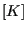
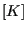

Next: *MODAL DYNAMIC Up: Input deck format Previous: *MEMBRANE SECTION Contents
Keyword type: step
This card is used within a step in which the *MODAL DYNAMIC or *STEADY STATE DYNAMICS procedure has been selected. There are two optional, mutually exclusive parameters: RAYLEIGH and MODAL=DIRECT (default).
If MODAL=DIRECT is selected the user can specify the viscous damping factor
 for each mode separately. This is the default. Direct damping is not
allowed in combination with nonzero single point constraints in a
*MODAL DYNAMIC procedure (however, in a
*STEADY STATE DYNAMICS procedure it is).
for each mode separately. This is the default. Direct damping is not
allowed in combination with nonzero single point constraints in a
*MODAL DYNAMIC procedure (however, in a
*STEADY STATE DYNAMICS procedure it is).
If RAYLEIGH is selected Rayleigh damping is applied in a
global way, i.e. the damping matrix
 is taken to be a linear combination of the
stiffness matrix
 and the mass matrix
is taken to be a linear combination of the
stiffness matrix
 and the mass matrix
 :
:
| (644) |
The coefficients apply to all modes. The corresponding viscous damping factor for mode j amounts to:
| (645) |
Consequently,  damps the low frequencies,
damps the low frequencies,  damps the high
frequencies.
damps the high
frequencies.
The *MODAL DAMPING keyword can be used in any step to redefine damping values defined in a previous step.
First line:
Second line if MODAL=DIRECT is selected (or, since this is default, if no additional parameter is entered):
Second line if RAYLEIGH is selected:
Example: *MODAL DAMPING,RAYLEIGH ,,0.,2.e-4
indicates that the damping matrix is obtained by multiplying the stiffness matrix with

Example files: beamdy3, beamdy4, beamdy5, beamdy6.